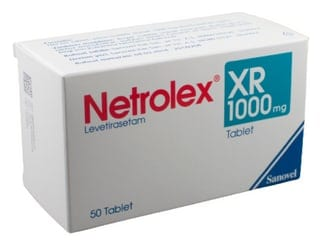

Netrolex XR 1000 mg TABLET,100 Adet

Ne için kullanılır
KT · Bölüm 1NETROLEX XR, 1000 mg levetirasetam içeren 50 ve 100 tabletlik ambalajlarda sunulan XR tablettir.
NETROLEX XR 1000 mg XR Tablet; beyaz renkli, çentiksiz, oblong film kaplı tablettir
NETROLEX XR, epilepsi (sara) nöbetlerinin tedavisinde kullanılan antiepileptik (sara nöbetlerini önleyici) bir ilaçtır.
NETROLEX XR, 12 yaş ve üstü hastal arda ikincil olarak yaygınlaşma olan ya da olmayan kısmi başlangıçlı nöbetlerde tek başına ve ilave tedavi olarak kullanılır.